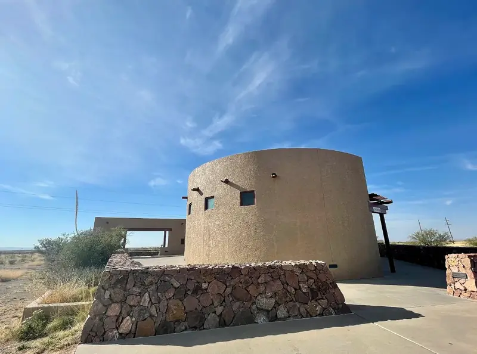
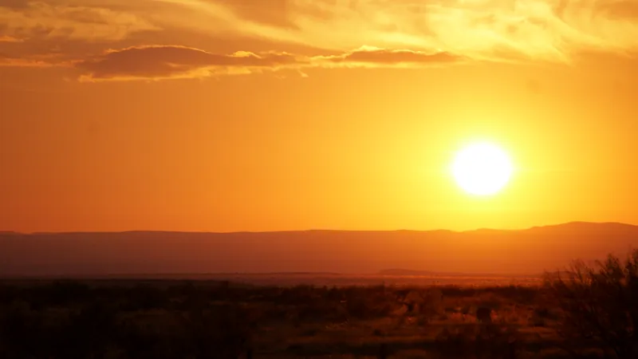

Observe like a scientist
Any clear night will show you lights over Mitchell Flat. Almost all have an ordinary source. A few minutes of careful notes turns "we saw something" into an observation someone can check.

Where and when
The public place to watch is the Marfa Mystery Lights Viewing Area on US-90, about nine miles east of Marfa.1 You look south and southwest across the flat. The land beyond the viewing area, including all of Mitchell Flat, is private ranchland. Please stay at the Viewing Area and on public roads. Don't stop on highway shoulders at night.
Go after full dark and give your eyes 20–30 minutes to adapt. Moonless nights give the most contrast. Bring layers: the average low in Marfa is around 43 °F, and colder in winter.2 Set expectations too. The longest camera record counts only a handful of nights a year with lights its author could not explain.3

What to record
- Time, to the second. Use your phone clock. With time you can match lights to traffic, trains, aircraft and satellites later.
- Bearing. Use the camera sky finder, calibrated on a known light, for the best accuracy. You can also use a compass, or the phone compass in the identifier. Compass bearings are magnetic. Add 6.2° for true bearing, or let the tool do it. Better still, note which skyline feature the light sits under. The panorama in the identifier lets you tap that spot.
- Height. Is the light above the mountain skyline or against the terrain? Roughly how far above or below it? A fist at arm's length covers about 10°. One finger width covers about 2°.
- Behaviour. Note colour, brightness changes, direction and speed of motion, whether it splits or merges, and how long it lasts.
- Conditions. Note wind, cloud, moon, and whether the air near the ground feels colder than a few feet up. That suggests a temperature inversion.
- A photo, if you can. Use a tripod, a long exposure, and the timestamp in the file.
The identifier's field log saves these on your phone and exports a spreadsheet file. Its panorama shades the known-source mask: the places where a known, ordinary light can appear. A light outside the mask is the kind most worth a careful record.
Rule these out first
- Car headlights on US-67Pairs of lights moving steadily, often splitting as cars pass. They appear only on a few bearings (229–238° true, 223–232° magnetic), below the skyline. Northbound cars on the straight at about 233.5° true point almost at you and can look brighter than any star.
- Car headlights on RM 2810Pinto Canyon Road climbs into the Chinati foothills at 253–259° true (247–253° magnetic), just below the skyline. Cars heading back toward Marfa flash brighter on each bend that points at you.
- TrainsThe Union Pacific main line runs right past the Viewing Area. The Presidio line is in view 4–8 km to the south and south-southwest (about 143°–213° true), though trains on it are rare at night. Look for a bright headlight, often with flashing ditch lights.
- Towers and aircraftRed lights blinking or steady are aviation obstruction lights. From the Viewing Area, lit towers are in view at about 230°, 256°, 259°, 280° and 284° true. The one at 230° sits right among the highway headlights. Blinking white, red or green lights moving across the sky are aircraft.
- Stars and planetsA bright "light" low in the west that sinks slowly toward the mountains over half an hour is often Venus, Jupiter or a bright star setting. Scintillation near the horizon makes it flicker and change colour.
- The aerostatA tethered radar balloon operates from a site about 46 km to the west-northwest (293° true). Its lights can sit well above the terrain.
- Towns and ranchesSkyglow from Presidio and Ojinaga lies around 211–213° true. Ranch yard lights and vehicles on ranch roads appear anywhere on the flat.
- Other visitorsFlashlights, phone screens and car headlights at and near the Viewing Area reflect and move.
What cars look like from the platform
These photos were taken from the Viewing Area on 21 November 2018, about 20 minutes after sunset, through a 210 mm telephoto lens. Each small light is a car on US-67, 25 to 33 km away. We lined each photo up with the mountain skyline, and every light fell on the stretch of US-67 that our map says is in view, within 0.02° (about the width of a hair held at arm's length).


Dust on the lens shows up as soft dark blobs in the sky, and a hair on the sensor as a dark squiggle, as in these photos. Both stay in the same place in the frame when you move the camera. A light on the land does not.

_(cropped).jpg){kind=link}
Dark-sky manners
Use red light only. The night-vision mode on this site turns the whole page red. Turn headlights off when parked, and keep phone screens dim. Everyone around you is doing the same thing you are.
Sources
- Julia Cauble Smith, “Marfa Lights,” Handbook of Texas Online, Texas State Historical Association. tshaonline.org
- “Marfa, Texas,” Wikipedia, citing Western Regional Climate Center normals. en.wikipedia.org
- James Bunnell, Hunting Marfa Lights (2009), as summarized in Wikipedia: Marfa lights.
- Bearings, distances and visibility: this project's analysis. GitHub